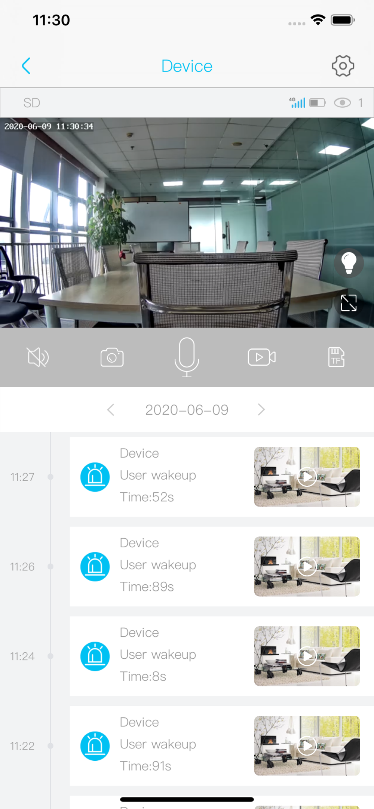

uboX 摄像头为什么能做到低功耗又少误报？拆解 PIR + AI 双重触发架构
从智能家居摄像头的核心矛盾出发，解析 uboX 如何用 PIR 传感器 + 设备端 AI 推理的两段式架构，在电池续航与误报控制之间找到平衡点。
从一个矛盾说起
智能家居摄像头有一个绕不开的矛盾：功耗和准确率。
你想要摄像头一直在录像，那它就得一直联网、一直编码、一直上传数据——插电款还好，电池款撑不过两天。你想让电池款省电，就得让它大部分时间睡觉，有动静了才醒过来。但"动静"这个判断本身就是个难题：树叶晃一下、猫跳上墙头、云影飘过 PIR 传感器，都会触发"有动静"，手机一天能收到几十条没用的推送。
我之前用过一款电池摄像头，用了一周就弃了——PIR 灵敏度开到最低还是能被风吹草动搞得推送轰炸，开到最高又真的有人来了不触发。直到我换了 uboX，误报量断崖式下降——后来才知道uboX官网上其实早就把架构原理写明白了，只是我当时没注意看。我才开始好奇：它到底在背后偷偷做了什么？
第一层：PIR —— 那个一直醒着的门卫
所有低功耗摄像头的"睡眠-唤醒"机制，核心都是一个叫 PIR 的传感器。PIR 全称被动红外（Passive Infrared），它不发射信号，只探测环境中红外能量的变化——说白了就是"有没有一个温度不同于背景的东西在动"。
PIR 的优点极其突出：几乎不耗电。它的待机电流在微安级别，对电池款来说，常年开着也不是负担。所以 uboX 的 PIR 是常开的，像一个一直坐在门口的门卫，眼睛半睁着，省着力气，但任何热源移动都会让它瞬间警觉。
但 PIR 的缺点也是天生的：它根本不知道面前过的是人还是车。只要是个温度高于环境的移动物体——晃着的树叶（被阳光加热了）、一只路过的猫、甚至一阵热风——都会触发它。这就是为什么单用 PIR 的摄像头误报率高得离谱。

第二层：设备端 AI —— 醒过来之后再问一句"你是谁"
uboX 没有停在 PIR 这一层。它的设计是：PIR 触发唤醒摄像头之后，本地再跑一个轻量 AI 模型，判断画面里的热源移动到底是不是人。
这就是它的 AI 人脸识别功能——注意，它不是一直在识别，而是 PIR 触发之后才开始识别。这个时序设计非常关键，背后藏着几个重要的技术取舍：
为什么不在云端做？ 把画面传到云端再分析，带宽消耗大、延迟高（云端处理完再推回通知，可能已经晚了两三秒），还有隐私顾虑——你家的监控画面要传到第三方服务器才能判断是不是人。uboX 选择设备端推理，画面不用出门，延迟只有几百毫秒，也不占额外流量——这个选型背后的模型参数和部署细节，在uboX文档里有更完整的说明。
为什么不能让 AI 一直跑？ 因为算力要钱。哪怕是最基础的图像识别模型，持续运行的功耗也是 PIR 的几百倍。电池款如果让 AI 常开，续航可能从三个月砍到三天。所以 uboX 的策略是：PIR 这个廉价门卫先拦一道，只有它觉得"有东西动了"，才叫醒 AI 这个贵的保安出来确认。
这套两段式架构的效果很直观：树叶晃不晃得到 PIR？可能会。但 AI 看一眼画面，树叶和人的轮廓差太远，直接过滤。车辆驶过？PIR 肯定触发，但 AI 一看是铁盒子的形状，也过滤了。小动物同理。真正的人走过来，PIR 触发、AI 也确认"这是个人"，才会推送报警。识别模型厂商也在持续迭代，手动更新固件的安装包可以从官方下载页拿到。
省电模式的代价：PTZ 为什么休眠时不能转
uboX 的 PTZ 摄像头（带云台可以远程旋转那种）有一个容易被忽略的行为：设备休眠时，PTZ 功能完全不可用。你在 APP 里点方向键，它没反应。只有先手动唤醒设备、画面建起来之后，云台才能转。
这个行为不是 bug，是功耗设计的必然结果。云台电机是个耗电大户，保持电机通电让镜头随时待命，功耗直接翻倍。uboX 的做法很干脆：休眠时整条 PTZ 电路断电，镜头固定在默认角度不动。要转？先唤醒，电机上电，再操作。
这背后反映的是 uboX 整个产品线的一个核心设计哲学：每一个耗电模块，都只在真的需要时才通电。不只是 PTZ，LED 状态灯的亮度、传感器的采样率、甚至 WiFi 模块的连接策略，都在围绕这个原则做妥协。
那个让人困惑的双重重置键
如果你用过 uboX 的重置功能，可能会注意到一件事：长按重置键 3 秒和 5 秒，效果不一样。
3 秒蓝灯闪烁 → 清除 WiFi 配网信息，进入配网模式。账号绑定、录像数据都还在。5 秒以上所有灯全亮 → 恢复出厂，所有本地数据清空，账号绑定也解除。
为什么要做这个区分？因为现实中有两种完全不同的"重置"场景。一种是换了新路由器，只需要重新配 WiFi，不想丢掉之前的录像和账号绑定。另一种是设备要转给别人，必须把所有东西清干净。如果只有一个重置操作，要么前者被迫丢数据，要么后者留下隐私隐患。
这个 3 秒 vs 5 秒的设计，本质上是用一个物理按键的两种时长，实现了两个逻辑上完全独立的操作。比在 APP 里做两层菜单更可靠——设备都连不上 WiFi 的时候，你根本进不了 APP 设置。
同样的思路还体现在 LED 状态机上。uboX 用蓝灯、红灯的亮灭、闪烁节奏，编码了至少五种不同的设备状态：蓝灯常亮=正常在线，红灯常亮=配网失败或断网，红绿交替闪=正在连网，蓝灯慢闪=电池低电，完全不亮=断电或硬件故障。这相当于把一个简易的诊断面板直接做在了机身外面，不用开 APP 就能排查大部分问题——售后成本直接降了一大截。
这套设计的代价
说了这么多好的，也得聊聊这套架构的边界。
AI 永远有误差。设备端跑的是轻量模型，算力有限，不可能像云端大模型那样精准。光线差、距离远、人被部分遮挡的时候，AI 可能把人误判成动物，也可能把车辆误判成人。uboX 文档里也承认了这一点：AI 识别不准时，先更固件、再调 PIR 灵敏度，实在不行就接受边界案例。
不是所有机型都有 AI。设备端推理需要一定的硬件算力，低配型号可能阉割了这个模块。如果你打开 APP 进设置找不到 AI 人脸识别的开关，那就是硬件不支持，只能单用 PIR——误报率会明显高一些。
数字变焦的画质天花板。uboX 标注的"变焦"几乎全是数字变焦——简单说就是把画面中间那一块放大裁切，画质会跟着糊。光学变焦需要镜头模组加电机，成本和体积都上去了，跟 uboX 主打的低功耗电池款定位天然矛盾。这是取舍，不是偷工减料。
最后说说我的判断
uboX 这套 PIR + 设备端 AI 的双重触发架构，本质上是在"功耗预算"这个硬约束下做出的最优解。它不追求完美的图像识别准确率，不追求光学变焦的画质，不追求云端大脑的智能——它追求的是：用最低的功耗，把真正重要的通知送到你手机上。
如果你需要的是一个能在户外用电池撑三个月、不每天骚扰你、真有人来能及时推送的安防摄像头，这套设计精准命中需求。如果你需要的是连续录像 24 小时、光学变焦拉满、云端 AI 分析行为轨迹的专业监控，那 uboX 从架构上就不是为这个场景设计的。
选设备不是选参数，是选它背后的设计哲学。uboX 的哲学写在每一个细节里：两段式触发、休眠断电、3 秒 vs 5 秒的重置键、LED 状态机——每一处都在重复同一个选择：能省就省，但该准的时候必须准。
如果你想深究这套设计的每个细节——PIR 的触发阈值、AI 模型的具体参数、PTZ 的电机时序——对应的资料散落在三个仓库里：GitHub、Gitee、GitCode，想在哪查随你。